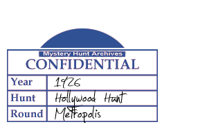

Need to Take Someone Out?
This puzzle included elements that are subject to change over time. It may not be solvable in the way originally conducted during the Hunt.
For a limited time only, get a Terminator and we'll throw in the temporary use of his fast car! Just look in the usual space or somewhere nearby. (Disclaimer: car may smell like frozen meatballs.)
- Purple dinosaur
- A Cambridge Carrotmob organizer's first name
- Role for Price opposite West and Ward
- Kill a piece of legislation
- Escorted Griffin to 2009 Teen Choice Award
- Diskant portrayer in Street Kings
- Hole in one
- Extraordinarily talented canine actor born "Higgins"
- Red Sox pitcher with the most saves
- Eva who wrote The Secret of Platform 13